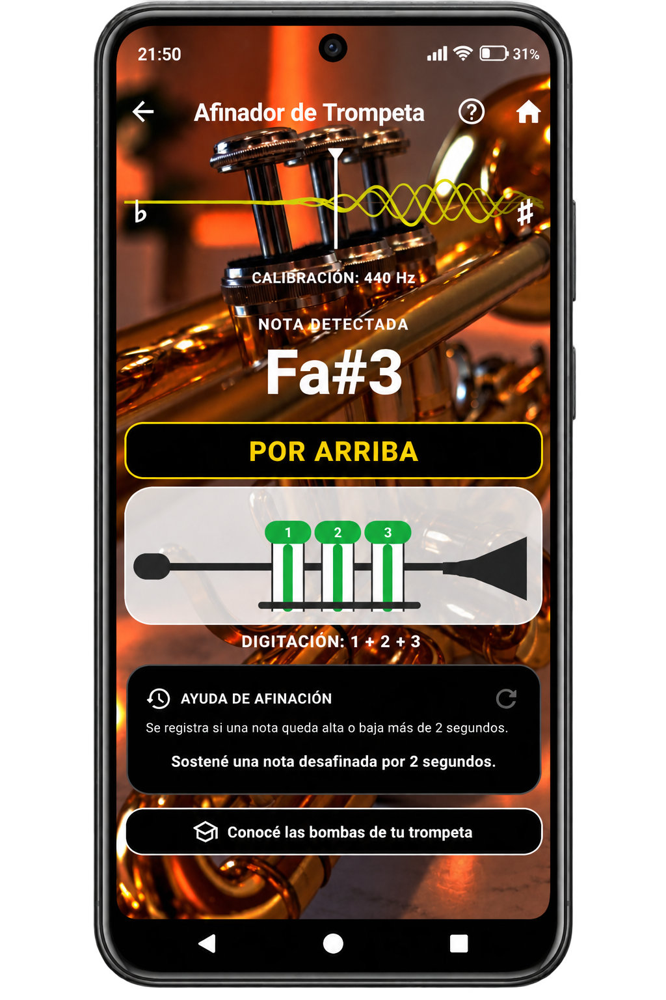
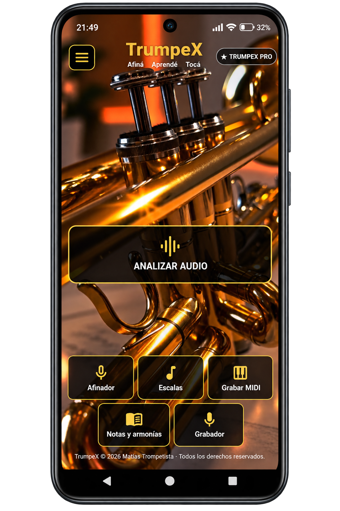
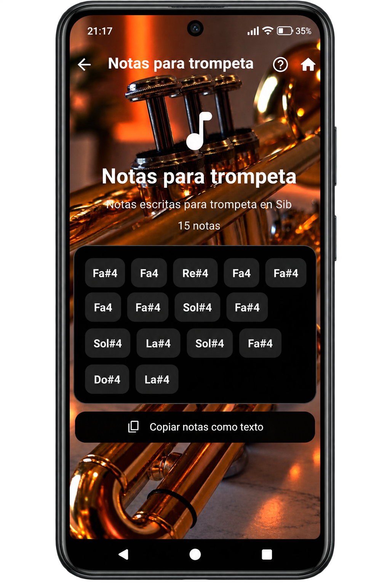
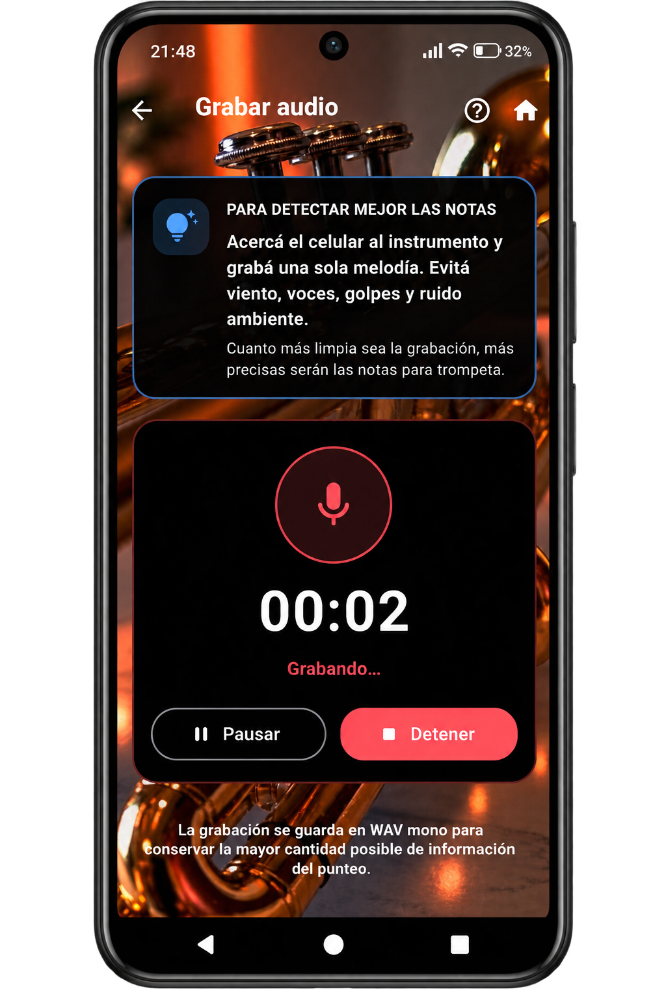
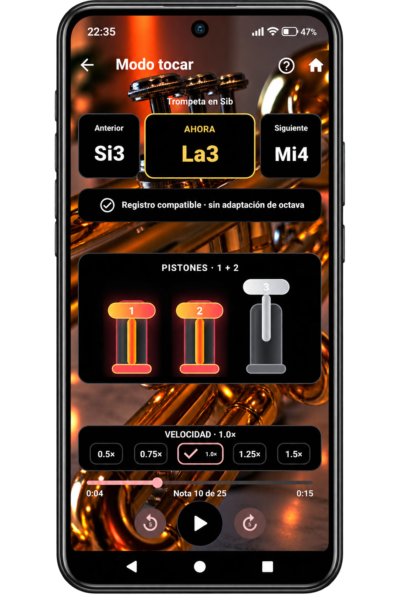
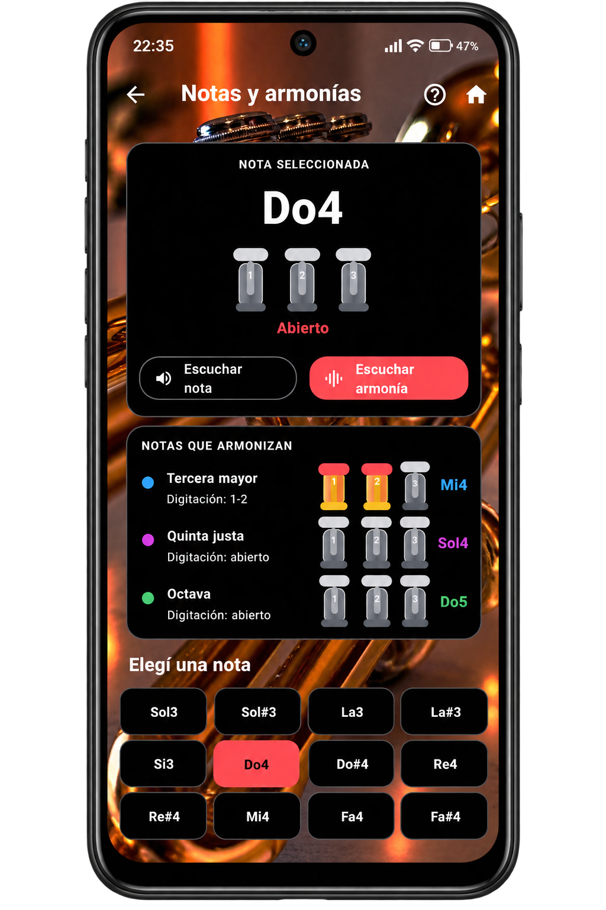
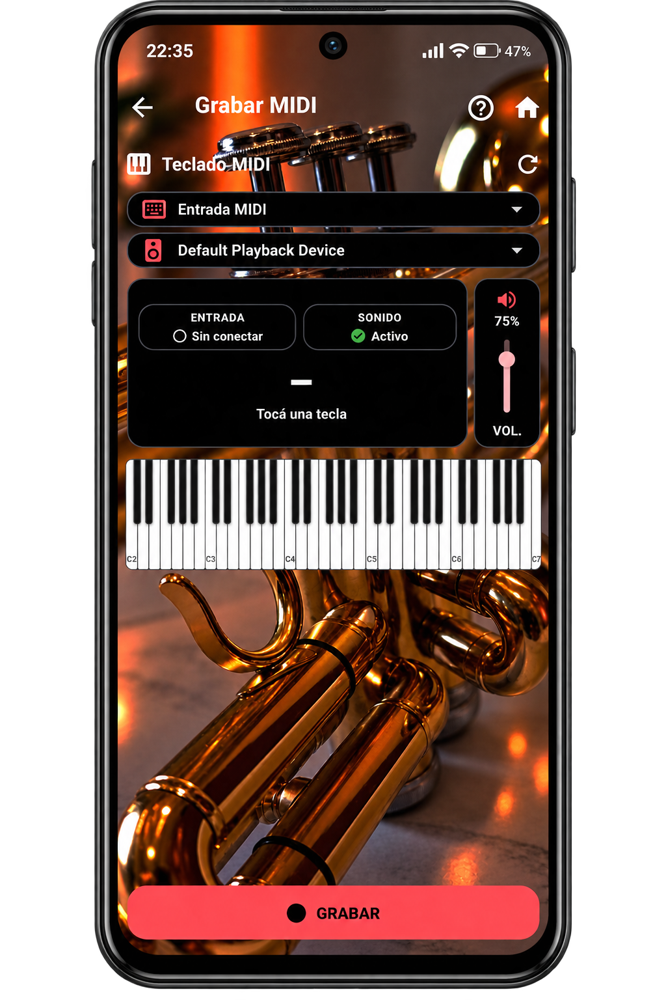
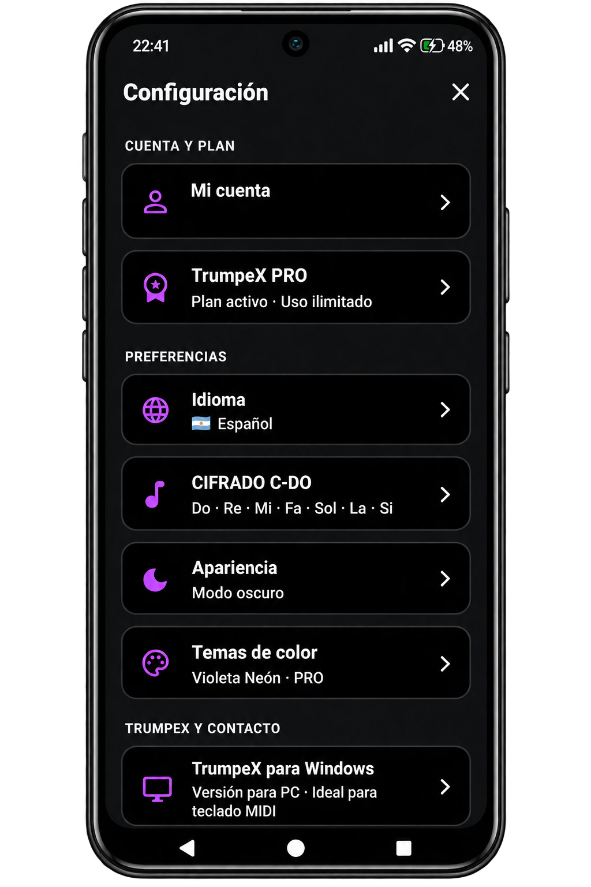

Afinador
Detectá notas y trabajá tu afinación con una interfaz clara.
Afiná con precisión, explorá notas y armonías, analizá audio y conectá tu teclado MIDI. Todo en una experiencia diseñada para vos.
De la práctica diaria al análisis musical: encontrá las herramientas que necesitás en un mismo lugar.
Detectá notas y trabajá tu afinación con una interfaz clara.
Convertí grabaciones y canciones en información musical útil para estudiar.
Explorá sonidos y digitaciones desde la propia aplicación.
Conectá un teclado compatible y ampliá tus posibilidades de práctica.
Consultá escalas, notas y combinaciones para desarrollar tu técnica.
Registrá tus interpretaciones y volvé a escucharlas cuando quieras.
Una interfaz oscura, herramientas a mano y un recorrido simple entre práctica, exploración y aprendizaje.


Explorá las pantallas de TrumpeX en Android: afinación, análisis, práctica, MIDI y configuración.






Usá TrumpeX sin costo y conocé las opciones de acceso PRO.
Acceso a herramientas con un sistema de créditos diarios.
La experiencia ampliada para quienes practican y crean con frecuencia.
TrumpeX para Windows v1.0.0 ya está disponible para descargar. La versión para Android llegará a Google Play próximamente.